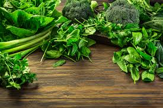
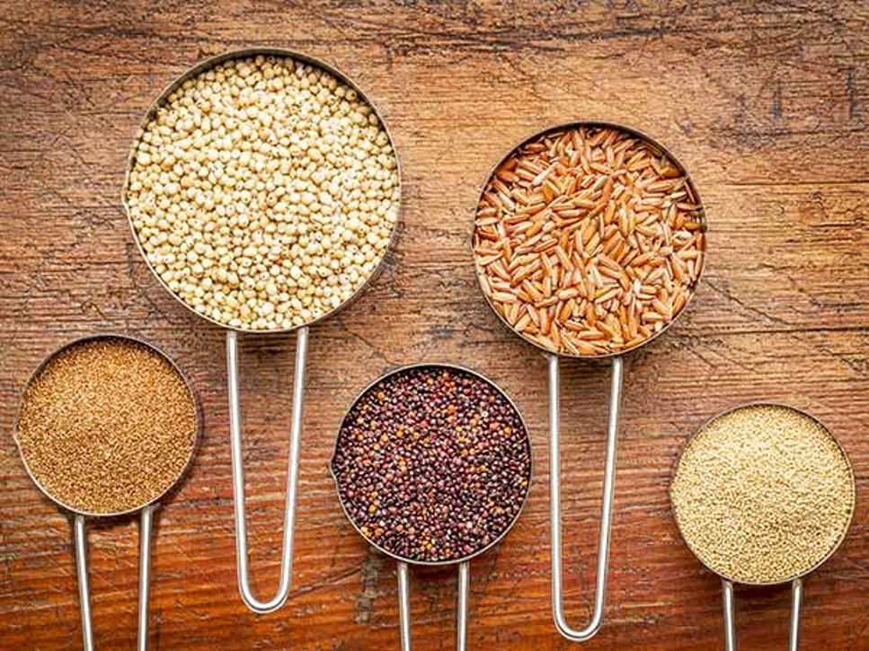
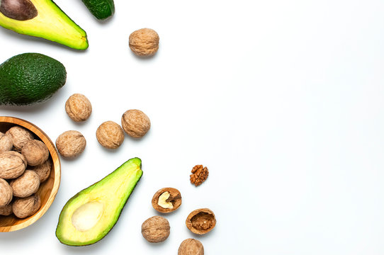
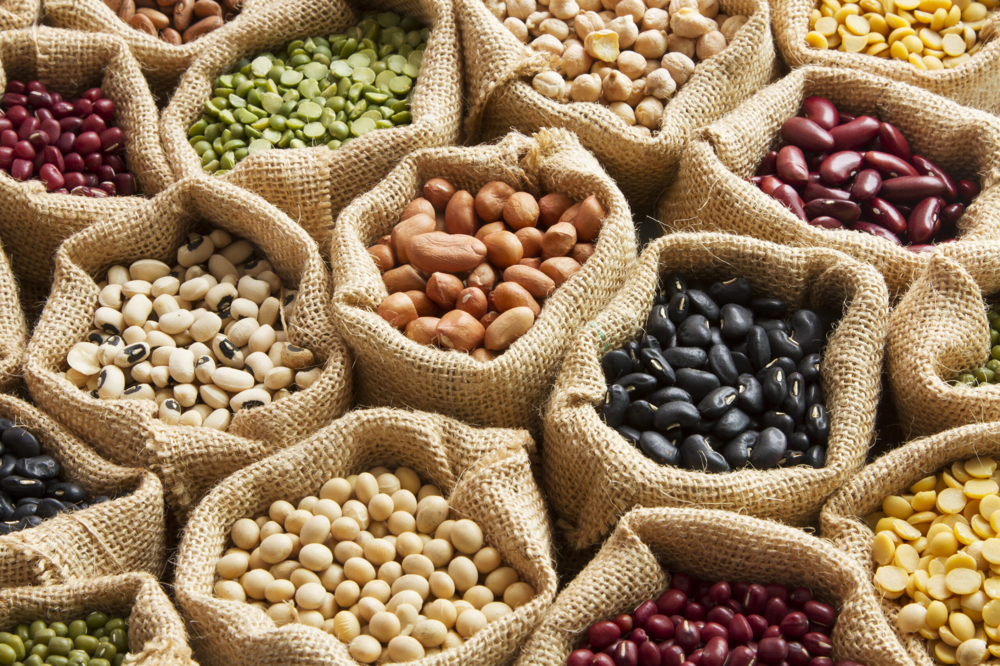

The Power of Leafy Greens

Leafy greens like spinach, kale, and Swiss chard are packed with vitamins, minerals, and antioxidants. Including them in your diet can help boost your immune system, improve digestion, and reduce the risk of chronic diseases. Try adding a handful of leafy greens to your salads, smoothies, or stir-fries for a nutritious boost!
For more information, check out Healthline's guide to leafy green vegetables.
The Benefits of Berries

Berries such as strawberries, blueberries, and raspberries are not only delicious but also incredibly nutritious. They are loaded with antioxidants, fiber, and vitamins, making them a great addition to your diet. Consuming berries regularly may help improve heart health, support brain function, and even aid in weight management.
To learn more about the health benefits of berries, visit Medical News Today.
The Importance of Whole Grains

Whole grains like oats, quinoa, and brown rice are rich in fiber, vitamins, and minerals. They provide sustained energy, aid in digestion, and help regulate blood sugar levels. Incorporating whole grains into your meals can promote better heart health, support weight management, and reduce the risk of type 2 diabetes.
Read more about the benefits of whole grains at Healthline.
Healthy Fats: Avocado and Nuts

Avocado and nuts are excellent sources of healthy fats, which are essential for brain health, hormone production, and nutrient absorption. Incorporating these foods into your diet can help reduce inflammation, support heart health, and promote healthy skin. Enjoy avocado on toast or add nuts to your salads and yogurt for a tasty and nutritious boost!
Find out more about the benefits of avocado and nuts at WebMD.
Protein Power: Beans and Legumes

Beans and legumes are nutrient-dense sources of plant-based protein, fiber, and essential vitamins and minerals. They are excellent alternatives to meat and can be included in a variety of dishes, such as soups, salads, and stir-fries. Adding beans and legumes to your diet can help support muscle growth, improve digestion, and reduce the risk of chronic diseases.
Explore more about the benefits of beans and legumes at Medical News Today.